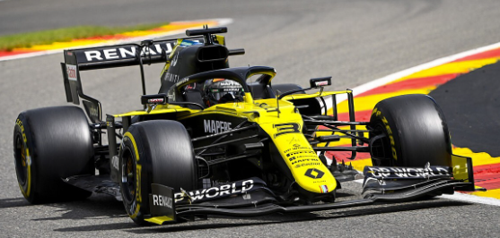
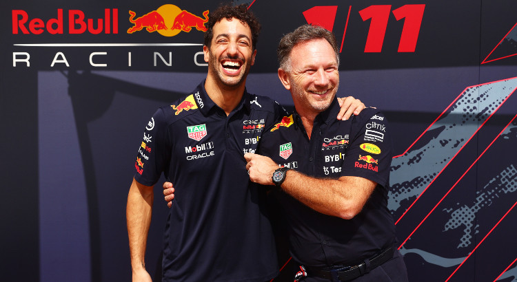

Daniel Ricciardo est un pilote automobile australien né le 1er juillet 1989.
Il exerce cette profession depuis 2005, en 2009 il devient pilote réserve de chez Red Bull Racing, mais c'est en 2011 que sa
carrière en Formule 1 commence. Il commence par être troisième pilote chez Toro Rosso puis est titularisé chez HRT Formula One
Team où il remplace Narain Karthikyan à partir du Grand Prix de Grande Bretagne. Sa première saison réussie lui permet d'intégrer
l'écurie Toro Rosso pour la saison 2012.
Il accède ensuite à l'équipe première Red Bull en 2014, durant son passage il se retrouve
propulsé au rang de leader de l'écurie après le départ de Sebastian Vettel pour Ferrari en 2015. Ses dernières saisons ne sont pas à
la hauteur de son talent, il parvient tout de même à deux victoires, une à Monaco en 2018 et une à Bakou en 2017 à la suite d'un
incroyable dépassementde trois monoplaces.
Alors que l'écurie souhaitait le conserver, son départ a été annoncé avant même la fin de la saison. En effet, en Août 2018 Red Bull Racing confirme le départ de Ricciardo à la fin de la saison. Renault F1 Team annonce son recrutement pour deux saisons (2019 et 2020). Après des débuts compliqués (des abandons, des problèmes techniques,...), il retrouve le podium lors du Grand Prix d'Allemagne en terminant troisième derrière Hamilton et Verstappen. Il offre le premier podium à l'écurie depuis 2011. En Mai 2019, il signe un contrat pluriannuel avec l'écurie Mclaren.
Cette nouvelle écurie était pleine de promesses : un contrat attrayant, un coéquipier contre qui se battre, une voiture assez développée. Le rêve a rapidement tourné au cauchemard à bord de cette MCL35M, son pilotage ne correspondant pas à la voiture. Il n'atteint que cinq fois la Q3, termine au mieux cinquième lors du Grand Prix de Grande-Bretagne et subit des critiques par rapport aux écarts avec son coéquipier. Rien ne semblait aller bien pour lui lors de ses débuts. Lors du quatorzième Grand Prix, celui de Monza en Italie, il parvient à se qualifier en première ligne et à remporter ce Grand Prix. L'écurie Mclaren renoue avec la victoire 9 ans après la dernière au Brésil en 2012. Il lui a fallu attendre 67 Grands Prix avant de revenir à son niveau.
Les rumeurs courraient depuis plusieurs semaines mais c'est finalement après le Grand Prix d'Abu Dhabi que l'écurie Red Bull a annoncé la signature en tant que troisième pilote de Daniel Ricciardo. Après un été riche en rebondissements et en coups bas, il a finalement trouvé un baquet pour 2023. Étant un pilote très apprécié par les fans et au sein du paddock, tout le monde était triste de voir l'issue de cette saison pour lui. C'est donc avec le sourire qu'on le retrouve dans l'écurie Red Bull. Ricciardo est un pilote très apprécié dans cette écurie, dans le communiqué publié sur le site de Red Bull, on peut lire à de nombreuses reprises que "il revient à la maison". Cela annonce une belle prochaine saison pour Ricciardo qui a l'air de se dessiner. On a hâte de voir la suite et surtout de voir un retour à son meilleur niveau.
